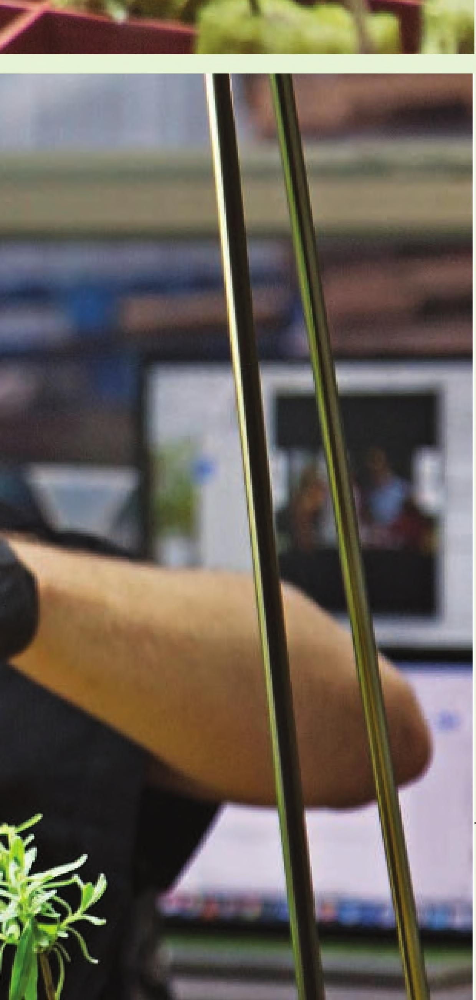

4 STARTING SEEDS and CUTTINGS GROWING A HEALTHY, ROBUST SEEDLING or root cutting is often one of the biggest challenges for new hydroponic gardeners. The ideal conditions for germination or root establishment are dependent on crop selection. Refer to the crop selection charts in the appendix to find recommended germination temperatures for various crops. Do not be discouraged if you struggle to grow healthy seedlings or rooted cuttings on your first try; it may take a few attempts to understand the proper practices for your environment. Worst case, you can transplant traditional soil seedlings purchased from a garden center into a hydroponic system using the steps listed in the final section of this chapter. Stone Wool Preparation It is important to rinse stone wool before seeding. Some stone wool growers prefer to soak their stone wool overnight, but I've found that is generally unnecessary. Technically, stone wool should be rinsed or soaked with water at a pH of 5.5, but I've also found this to be unnecessary. I've had success starting seeds in stone wool with water anywhere in the pH range from 5 to 7. If you don't have a pH meter, don't worry — chances are you will still have success. The initial rinse of stone wool can be with either water or a nutrient solution, but it is important to eventually rinse the stone wool with a nutrient solution so the young seedlings or cuttings have access to nutrients once roots emerge. Most recommendations say to use a nutrient solution at one-fourth to half strength, but I've had success starting seeds in nutrient solutions anywhere from one-fourth up to full strength. The point is, most things in the process of growing plants are slightly flexible, so don't panic if your pH, nutrient solution, root temperatures, or other factors are slightly off from the recommendations. My preferred method of rinsing stone wool is using a mesh bottom tray, which allows any loose stone wool dust to be easily rinsed away. It is also possible to rinse stone wool in a solid bottom tray by simply soaking the sheet and pouring off the excess nutrient solution. 137
